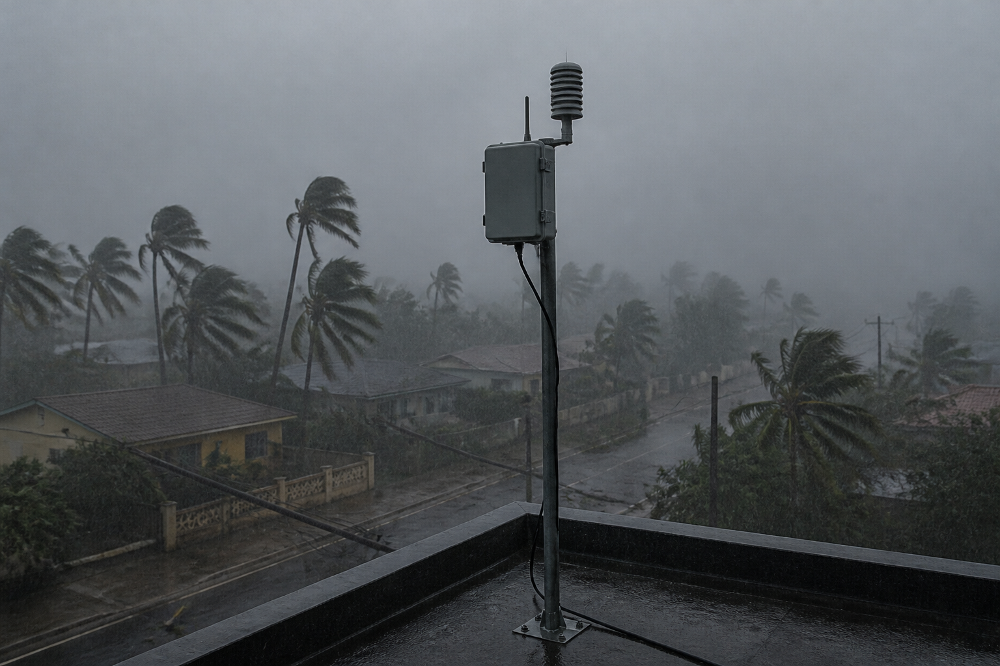

Élaborer la chaîne d'énergie autonome de la station d'alerte — et justifier chaque matériau face au cyclone
🖥️ Ordinateur partagé (salle de techno, CDI) : un autre élève qui ouvre cette page sur la même session verra tes réponses.
Quand tu as fini : imprime en PDF si tu veux garder une trace, puis clique sur « 🗑 Effacer ma sauvegarde ».
Pour toi, sans note : coche ce qui est déjà en place. Sous chaque ligne, un lien pour le reprendre si tu n'en es pas sûr·e.
→ pas encore sûr·e ? relis « D'où vient l'énergie qui arrose les bacs ? » dans la synthèse 4e_C4.1 à C4.9
→ pas encore sûr·e ? relis la partie 2 de la synthèse 4e_C4.1, C4.2 et C4.4, « Comment l'énergie fait-elle avancer le wagonnet ? »
→ pas encore sûr·e ? relis la partie 1 de la synthèse 4e_C4.1, C4.2 et C4.4, « Lire l'organisation d'un système »
Dans cette séquence : la station d'alerte cyclonique est seule, dehors, et le courant peut être coupé pendant plusieurs jours — c'est même le moment où elle sert le plus.
Décrire sa chaîne d'énergie ne suffit pas : tu vas la dimensionner, et prouver qu'elle tient.
Un mot à garder en tête : une chaîne d'énergie, c'est le trajet de l'énergie depuis sa source jusqu'à ce qui bouge, chauffe ou éclaire.
Le mode essentiel masque les corrections et les compléments : il ne reste que les consignes et les exercices. À activer si la page te paraît trop chargée.
Souviens-toi de la panne…
Pendant l'exercice cyclone, la station d'alerte s'est tue.
L'équipe
de « SOS station » a réparé le câble et le fusible (la petite pièce qui coupe le circuit quand le courant devient dangereux).
Mais le rapport de la mairie pointe un problème plus grave :
la station est branchée sur le réseau EDF (le courant des prises, qui arrive par les lignes électriques).
Or, pendant un vrai cyclone, le réseau coupe presque toujours…
au moment précis où l'on a le plus besoin d'être alerté !
La mission de la 3e : concevoir l'alimentation AUTONOME de la station.
① Élaborer sa chaîne d'énergie — ce n'est plus fourni : c'est toi le concepteur.
② La dimensionner pour tenir 72 heures sans réseau.
③ Justifier chaque matériau face au vent, au sel, aux UV (les rayons ultraviolets du soleil, qui abîment les plastiques)… et à la planète.

Comment élaborer et dimensionner une chaîne d'énergie autonome capable de tenir 72 h de cyclone ?
Et comment justifier le choix de chaque matériau et de son procédé de mise en forme ?
Le niveau attendu est exactement le même qu'avec la consigne libre : ces débuts de phrases retirent l'obstacle de la rédaction, pas l'exigence scientifique.
Recopie-les et complète chaque « ____ ».
🅰 Avec matériel : petit panneau solaire, batterie et multimètre au labo (très basse tension uniquement) — mesures réelles de tension et de courant.
🅱 En simulation : le simulateur d'autonomie intégré à la page (aucun matériel).
🅲 Sans matériel : fiches imprimables, schéma-bloc papier et calculs à la main — tout est faisable au cahier.
Une question par ligne du bloc « Avant de commencer ».
Elles ne sont pas notées et ne comptent pas dans ta progression : elles te disent quoi relire avant de te lancer.
« Je ne sais pas encore » est une réponse utile.
Question directrice : quels blocs, dans quel ordre, pour que la station produise et gère SA propre énergie ?
Les réponses possibles — choisis une lettre pour chaque ligne :
Repère le trajet : panneau → régulateur → sélection de source → adaptation à 5 V.
La batterie est une branche de stockage reliée au régulateur : identifie la charge et la décharge.
Le régulateur protège la batterie (ni surcharge, ni décharge totale).
Le basculement sélectionne une source disponible : alimentation secteur isolée si elle est présente, ou alimentation solaire/batterie selon le montage.
Les intrus sont des actionneurs de sortie : ils consomment de l'énergie, ils n'en fournissent pas à la station.
Position 1 : le panneau solaire — il capte la lumière ET la convertit en électricité.
Position 2 : la batterie 12 V.
Position 3 : le régulateur de charge.
Position 4 : le convertisseur 12 V → 5 V.
Position 5 : le basculement secteur / batterie.
Natures : lumineuse → électrique → chimique (stockée) → électrique (5 V).
Hors du périmètre de l’alimentation : l'ampoule et le haut-parleur.
Ce sont des récepteurs ; ils pourraient appartenir à la signalisation de la station.
En 5e la chaîne était fournie, en 4e on la complétait : en 3e, tu l'as élaborée — c'est exactement 3e_C4.1.
Scénario : cyclone → réseau EDF coupé, ciel couvert → le panneau ne recharge presque plus.
Wh = W × h, comme des « watts pendant des heures ».
Puis divise par la tension (12 V) pour passer en Ah. Compare ensuite au catalogue : que vaut une marge de sécurité ?
6 × 72 = 432 Wh.
432 ÷ 12 = 36 Ah.
Une batterie vieillit et le cyclone peut durer : 36 Ah « tout juste », c'est déjà trop juste.
100 Ah tiendrait… mais coût, poids et impact environnemental explosent : dimensionner, ce n'est pas surdimensionner.
Énergie : 432 Wh.
Capacité minimale : 36 Ah.
Choix : 40 Ah — le minimum PLUS une marge
(vieillissement de la batterie, cyclone qui s'éternise), sans tomber dans le surdimensionnement (coût, poids,
impact environnemental d'une 100 Ah inutile).
Au simulateur : 20 Ah → 20 × 12 ÷ 6 = 40 h ❌ ; 40 Ah → 80 h ✅.
Deux formules seulement : P = U × I (donc I = P ÷ U), et la loi d'Ohm U = R × I.
Remplace par les valeurs et pose l'opération.
I = 6 ÷ 12 = 0,5 A.
Puis U = 0,4 × 0,5 = 0,2 V : le câble « vole » 0,2 V à la station.
Négligeable ici, mais c'est pour ça qu'on limite la longueur des câbles.
Le fusible : à 0,5 A pile, il fondrait en fonctionnement normal ; à 10 A, il laisserait passer un court-circuit destructeur.
Souviens-toi du fusible de « SOS station » !
I = P ÷ U = 6 ÷ 12 = 0,5 A.
Chute dans le câble : U = R × I = 0,4 × 0,5 = 0,2 V — la loi d'Ohm
n'est pas une formule abstraite : elle explique pourquoi un câble trop long ou trop fin « mange » la tension.
Fusible : 1 A — au-dessus du courant normal (0,5 A) pour ne pas fondre sans raison, assez bas pour couper
net un court-circuit.
C'est exactement le fusible que l'équipe « SOS station » avait remplacé !
Question directrice : quels matériaux, mis en forme comment, pour survivre au bord de mer martiniquais — sans oublier la planète ?
Relis les encadrés du document : chaque contrainte contient déjà sa conséquence. Le sel attaque quoi ? Les UV fragilisent quoi ?
Étanche ET ventilé n'est pas contradictoire : aérations en chicane, membranes… L'électronique chauffe : sans ventilation elle cuit ; sans étanchéité elle prend l'eau tropicale.
Le vent : des fixations renforcées et un mât résistant.
Les embruns : des métaux protégés.
Les UV : des plastiques traités.
La chaleur et l'humidité : un coffret étanche MAIS ventilé.
L'environnement : du recyclable et du réparable.
En 3e, on croise TOUJOURS contraintes techniques ET environnementales : c'est le cœur de C4.2.
Le niveau attendu est exactement le même qu'avec la consigne libre : ces débuts de phrases retirent l'obstacle de la rédaction, pas l'exigence scientifique.
Recopie-les et complète chaque « ____ ».
Deux questions à te poser : quelle CONTRAINTE domine pour cette pièce (vent ? sel ? UV ?) et combien d'exemplaires (pièce unique → impression 3D ;
grande série → injection ;
profilé long → extrusion).
Pour le mât : le sel attaque l'acier brut (souviens-toi du lampadaire de 5e !).
Le vent exige la solidité de l'acier.
D'où l'acier GALVANISÉ.
Ta justification doit citer les deux : « solide face au vent » ET « protégé du sel ».
Mât : acier galvanisé à chaud, laminage + soudure.
Coffret : polycarbonate anti-UV,
injection (forme complexe + série).
Support : aluminium, extrusion (profilé).
Carénage :
ABS verni, impression 3D (pièce unique : un moule d'injection coûterait des milliers d'euros pour
UNE pièce !).
Justification type : « Le mât est en acier galvanisé à chaud, laminé puis soudé, car l'acier résiste
au vent cyclonique et la galvanisation le protège de la corrosion des embruns ; l'acier est de plus recyclable. »
C'est la même chaîne que la station (en plus simple) et les mêmes contraintes de site. Pour le capot : 200 exemplaires, ce n'est plus une pièce unique…
Le stockage : la batterie et son régulateur.
L'énergie stockée : chimique.
Le mât : l'acier galvanisé.
Le procédé : l'injection — à 200 exemplaires, le moule est rentabilisé, l'inverse exact du carénage unique de la station.
L'argument complet : renouvelable, recyclable et réparable.
♻ Défi citoyen : relève la puissance (W) de 3 appareils de la maison.
Estime l'énergie qu'ils consomment en une journée (Wh).
Lequel pèse le plus lourd sur la facture ?
🔋 Défi powerbank : retrouve la capacité (mAh) d'une batterie externe et calcule combien de fois elle peut recharger un téléphone (≈ 3 000 mAh, en milliampères-heures).
Retrouve-t-on la marge de sécurité du dimensionnement ?
🌞 Défi Martinique : repère autour de chez toi 3 installations photovoltaïques ; pour chacune, cherche où se cache la batterie… ou explique pourquoi il n'y en a pas.
Ce que tu sais faire désormais : élaborer et dimensionner une chaîne d'énergie autonome (3e_C4.1) ;
justifier un matériau et son procédé en croisant contraintes techniques ET environnementales (3e_C4.2).
La station d'alerte est enfin prête à affronter un vrai cyclone, réseau coupé ou non.
Et après ? La station complète t'attend : ses chaînes d'information et ses données, son dépannage et son programme d'alerte.
🎯 Auto-positionnement : pour chaque compétence, où en es-tu ?
30 questions — dont 3 avec schémas à lire — pour vérifier toute la démarche du concepteur d'énergie.
🚀 Ouvrir le QCM d'entraînement